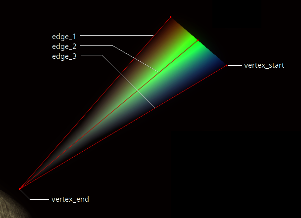

Trails
Trails are procedural, polygonal effects that can can be attached to effects and models.
Trails are defined by a series of edges, which are in turn defined by an initial and final vertex, which the edge interpolates between over the course of its life:
Vertices
| pos |
position relative to source for effects, +x is left, +y is backward, and +z is up, all relative to the camera |
| color | red, green, and blue color components, from 0 to 255 |
| alpha | opacity, from 0 to 255 |
Edges
| vertex_start | initial and final vertices to interpolate between over the course of the edge's life time |
| vertex_end |
Trails
| lifeTime | life time in seconds of the trail as a whole |
| fadeOutTime | fade out the trail as a whole during the last fadeOutTime seconds of lifeTime |
| edgeLifeTime | time in seconds each edge takes to transition from vertex_start to vertex_end |
| scale | vertex position scalar |
| bCloseEdges |
connect the last edge to the first edge this is equivalent to duplicating the first edge at the end of the edge list below |
edge_1 |
list of 2 or more edges each edge is connected to the previous edge |